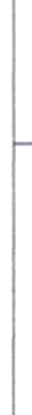
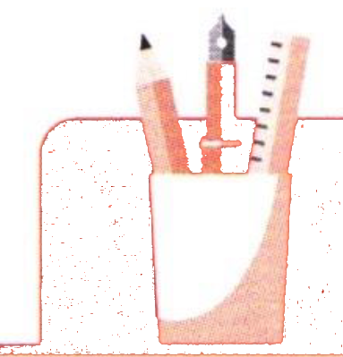
听力ListeningАудирование 5-3
第一部分Part IЧасть I
第1—3题： 听短语， 选择正确图片。每题听两次。Questions 1-3: Listen to each phrase and choose the correct picture. Each phrase will be played twice.Задания 1–3: Прослушайте фразы и выберите правильную картинку. Каждое задание прослушивается дважды.
sān gè píngguǒ例如： 三个苹果
three applesНапример: три яблока例如：
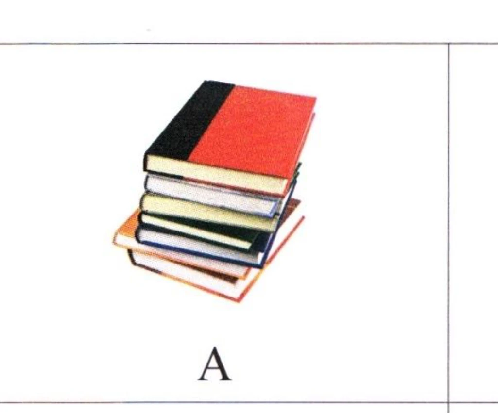
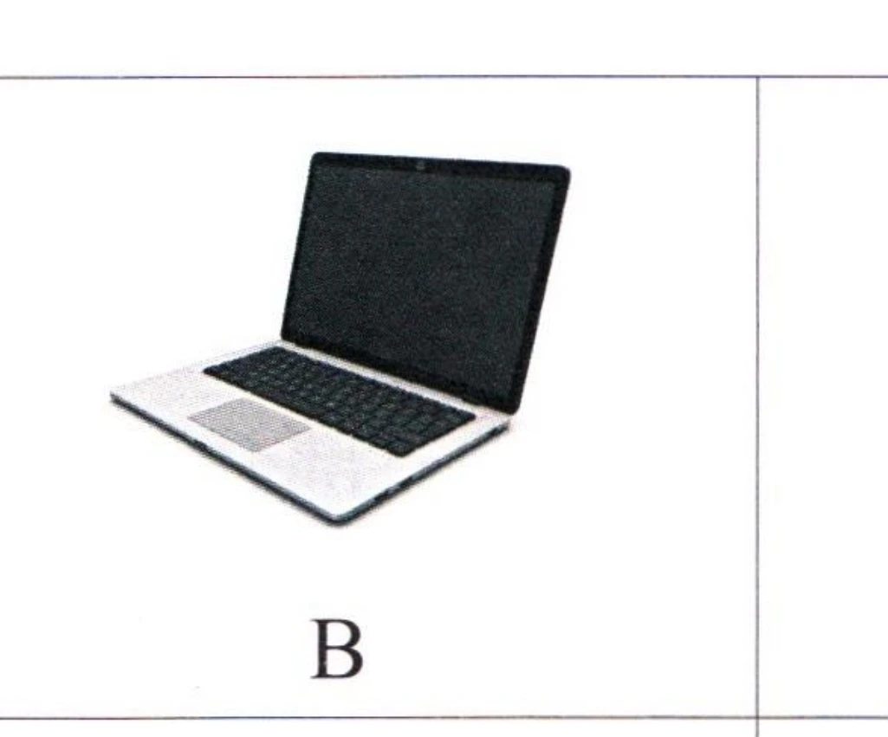
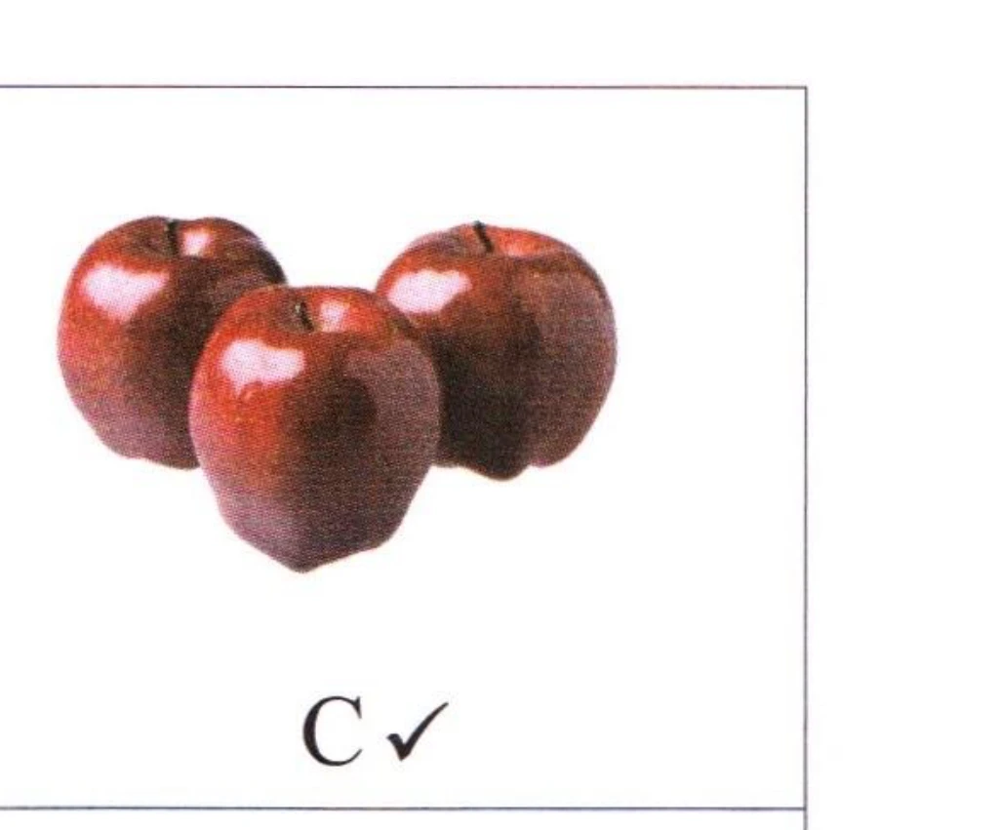
1.
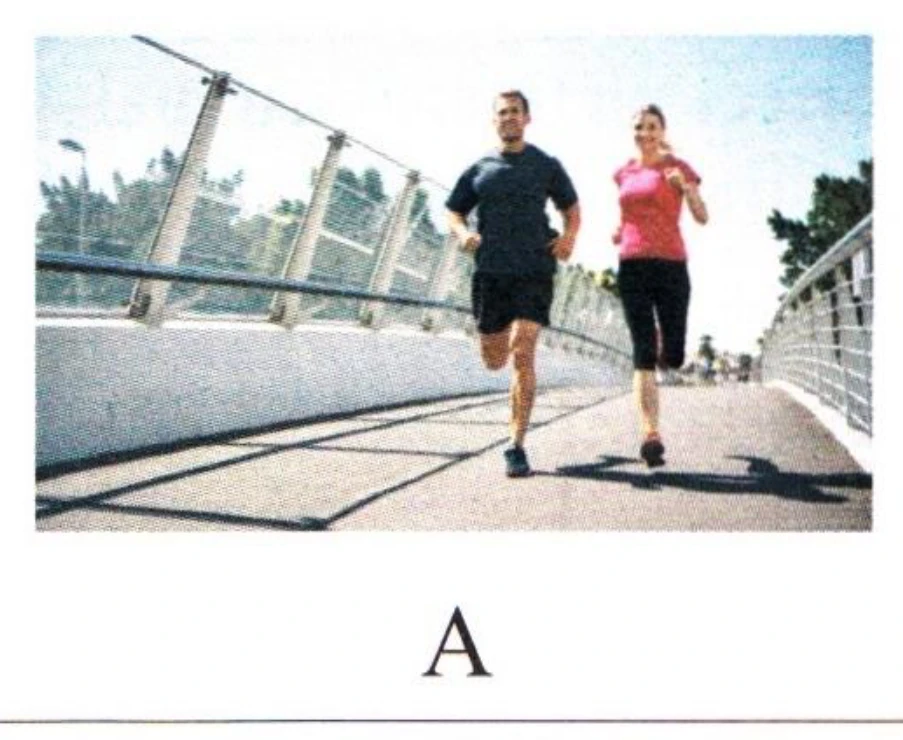
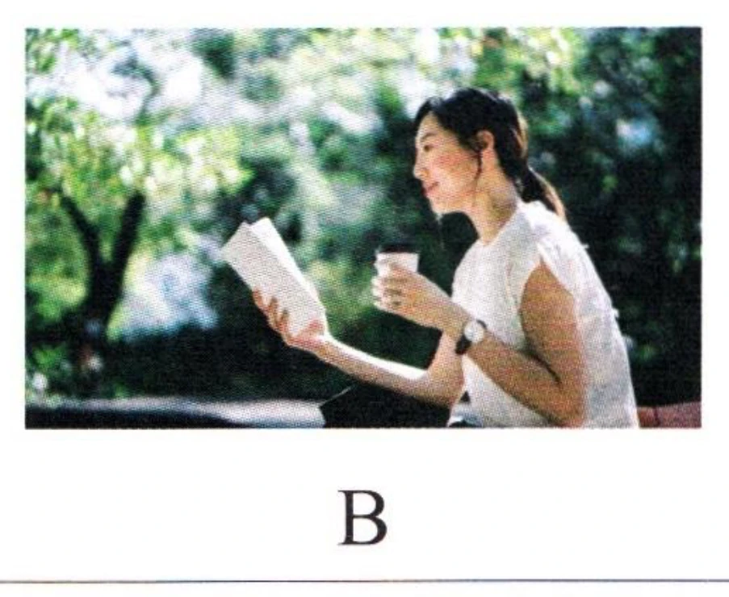
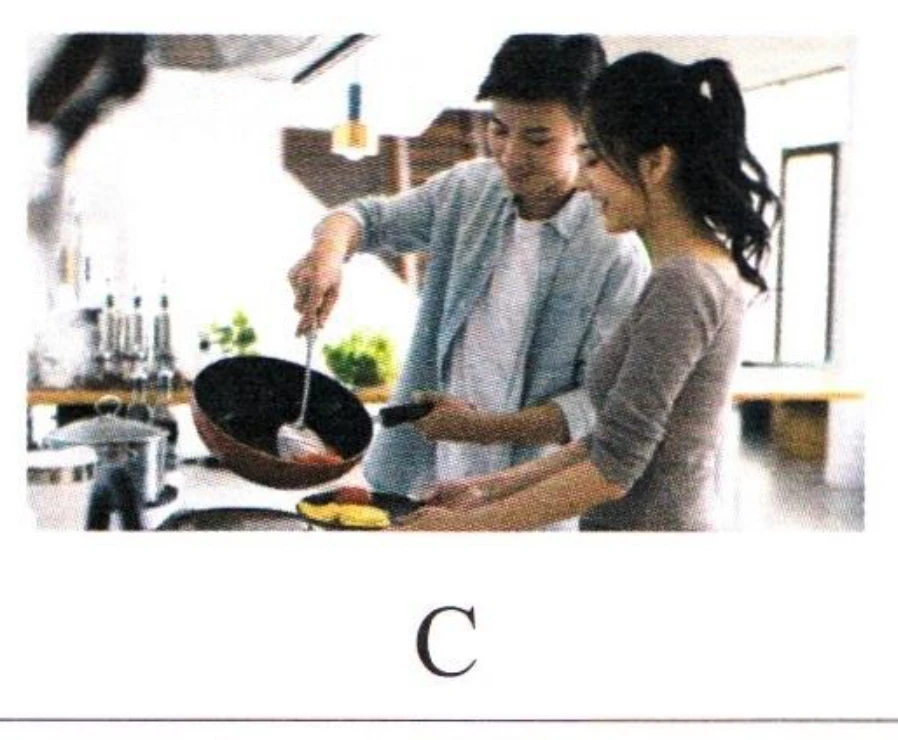
2.
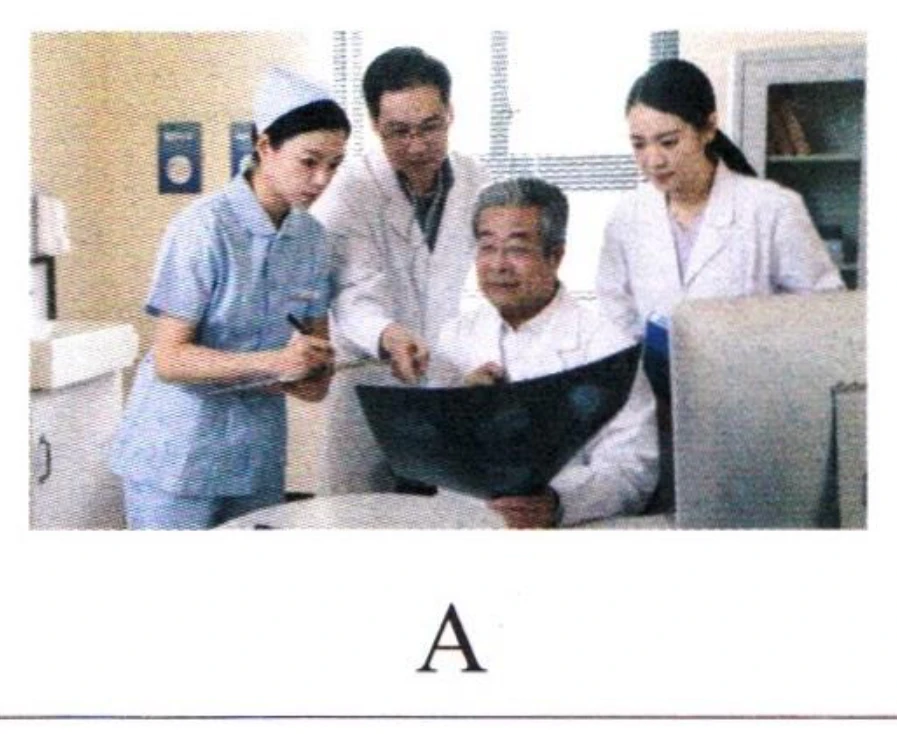
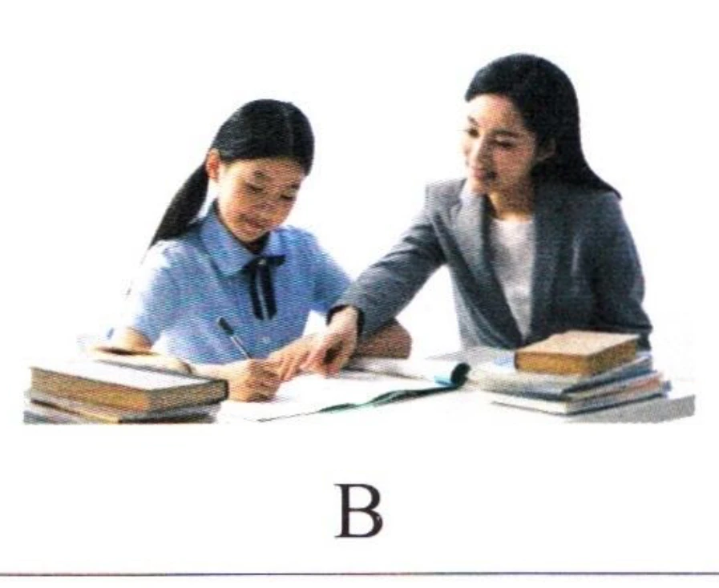
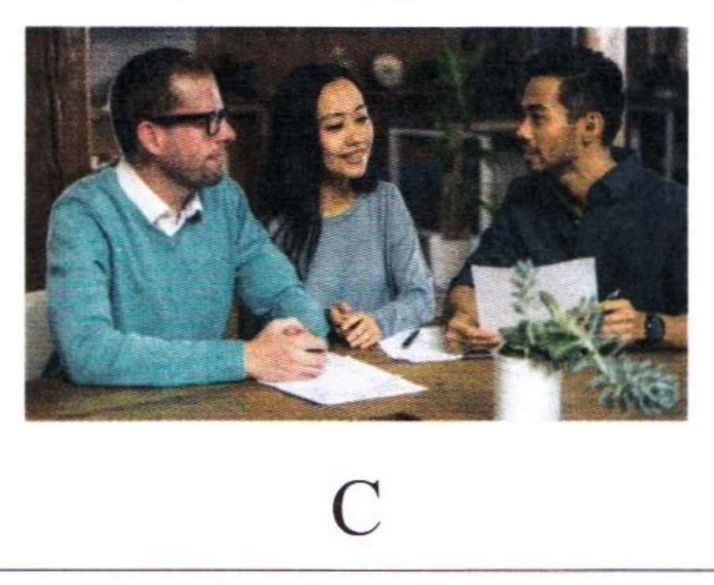
3.
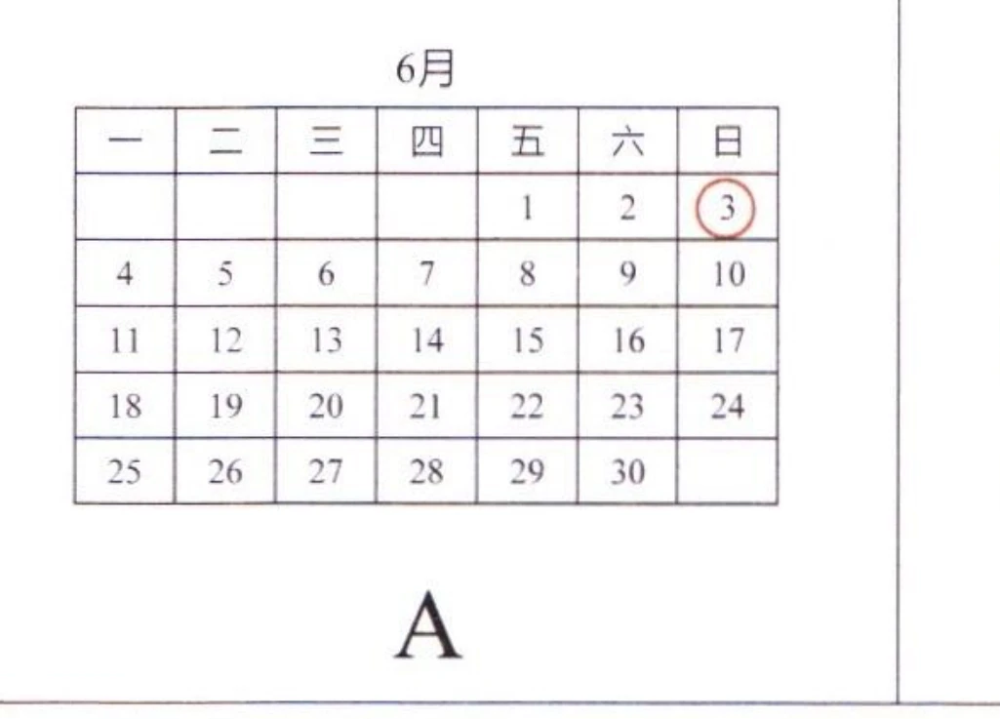
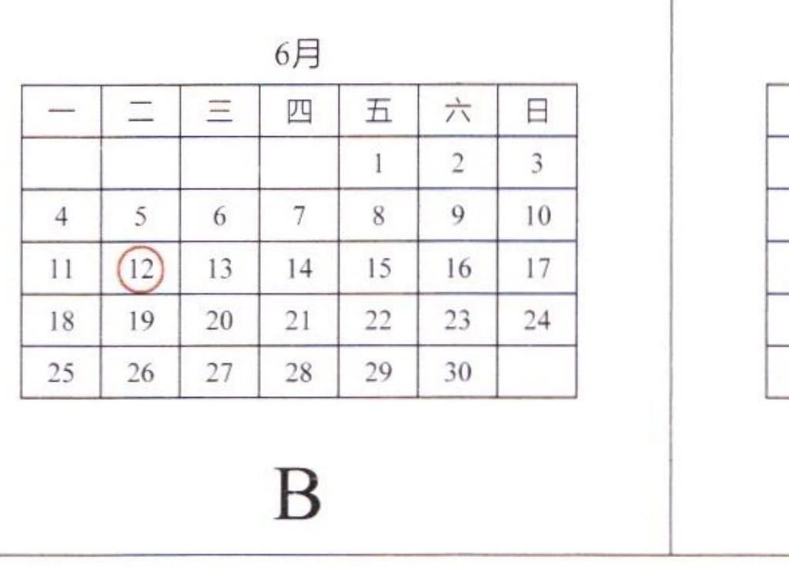
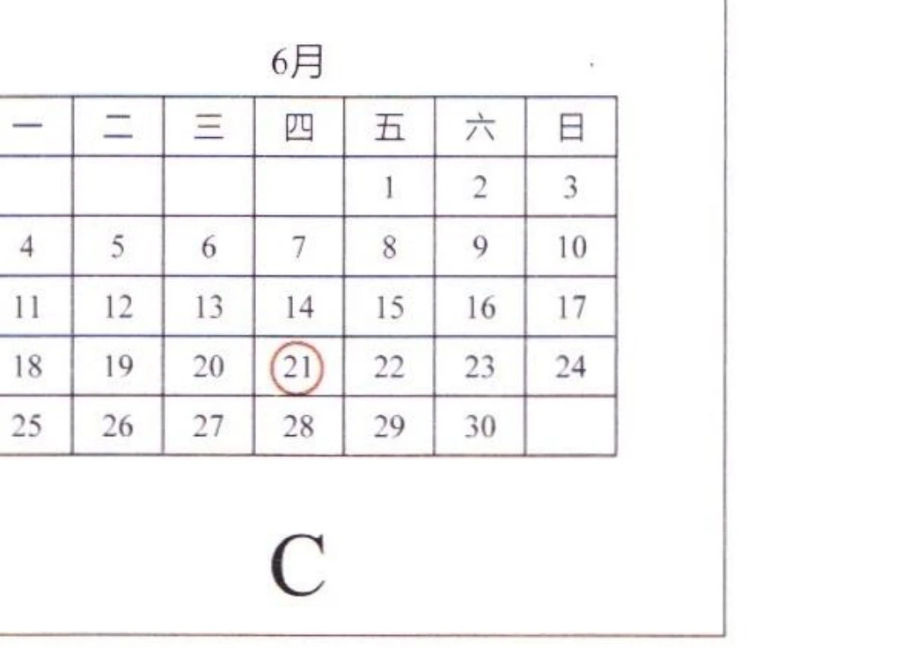